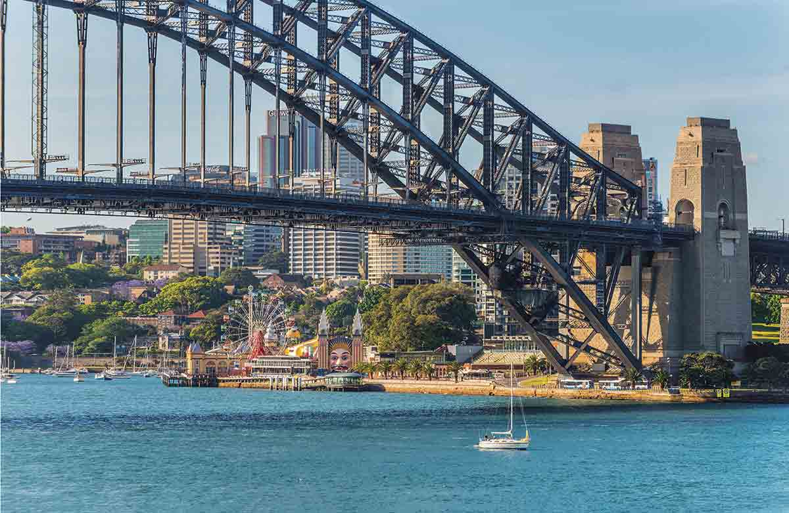
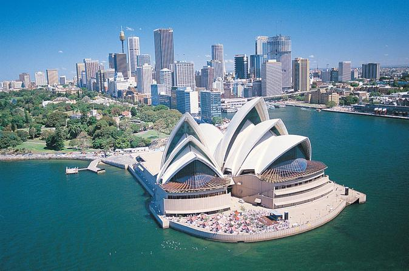

Alucinar con el Opera House. Inaugurado en 1957 con presencia de la reina Isabel II, es sin duda uno de los edificios más famosos del siglo XX. Desde el primer día os sentiréis atraídos por sus bóvedas de más de un millón de azulejos y querréis fotografiarla desde cada ángulo de la ciudad.
Pasear por el Harbour Bridge. Este puente, construido en 1932 como símbolo de la prosperidad económica de Australia conecta el centro financiero a la altura de Milsons Point con la costa norte de Sidney y destaca por su gran arco de acero, convirtiéndolo en uno de los mayores del mundo. Tanto si recorréis a pie sus más de 1.100 metros de longitud, como si decidís reservar el Bridgeclimb para subir hasta lo alto de su arco, las vistas sobre la bahía y el Opera House son espectaculares.
Disfrutar como un niño en Luna Park. Luna Park es un parque de atracciones de los años 30 maravillosamente conservado y que todavía está en funcionamiento (debéis chequear horarios y días de apertura antes de ir). Cuenta con una montaña rusa, una moon ranger que te suspende 20 metros de altura, un castillo mágico, toboganes y mucho mucho algodón de azúcar. Convertirse en surfers por un día en Bondi Beach. Es sin duda una de las playas referentes para el mundo del surf en Australia, aunque son muchos los que simplemente acuden para dar un paseo, practicar algo de deporte o disfrutar del ambiente en alguna de sus terrazas.
Sin embargo, su oleaje, sus fuertes corrientes y en ocasiones plagas de medusas la convierten en una playa peligrosa, con una media de 30 intervenciones diarias por parte de salvamento marítimo, cuya sede central se encuentra allí mismo.
Contemplar la belleza de St. Mary’s Cathedral. Esta preciosa catedral de estilo neogótica, resalta sobre todos los edificios del centro financiero de Sidney. Visitada por el Papa Benedicto XVI es además la más grande construida en Australia. Recorrer el sendero desde Coogee Beach hasta Bondi Beach: un paseo costero de 7 km por un sin fin de playas, parques, acantilados, bahías y piscinas de roca y acantilados. Si sois de los aficionados al running, ésta será una buena prueba física, al igual que una experiencia fantástica. A lo largo de la ruta atravesaréis también un cementerio situado frente al mar, seguramente de los más espectaculares que hayáis visto nunca.
Alucinar con el atardecer desde el ferry a Manly. No solo por el destino, sino por el recorrido en sí, hace de este ferry una actividad obligatoria. Y es por eso por lo que coger sitio en primera fila se convierte en una verdadera odisea, especialmente los domingos, cuando este ferry es gratuito. La playa de Manly, aunque menos frecuentada que Bondi, es también una opción ideal para el surf o para cualquiera de las excursiones que se organizan en sus alrededores.
Deleitarse con las vistas desde Millers Point Observatory Park. Millers Point es un minúsculo parque en medio de Sidney rodeado de callejones empedrados situado al sur del barrio de The Rock, primer asentamiento de la ciudad. Se pueden disfrutar de una de las mejores vistas a la bahía de Sidney. Visitar Darling harbour. Este puerto de la ciudad de Sidney es una amplia zona recreativa fruto de un proyecto de renovación urbana que terminará en 2020. Pararse en alguna de sus innumerables terrazas y disfrutar de la tarde durante la happy hour en esta zona tan popular es algo más que recomendable.
Perderse en el bullicio de Chinatown. Este barrio es el epicentro de la comunidad asiática, en concreto de la china, que es la mayor comunidad extranjera de la ciudad en Sidney. Chinatown es además un paraíso gastronómico para los amantes de la comida oriental porque encontraréis todas las variedades de cocina asiática en unas pocas calles: desde barbacoas coreanas, restaurantes de japoneses, de cocina China o tailandesa… hasta cadenas de sopas de las que solo hay en China! Pasear por el Royal Botanic Garden. El Jardín Botánico de Sidney es un lugar ideal para disfrutar de la naturaleza y desconectar de la ciudad. Este parque de unas 30 hectáreas, se encuentra estratégicamente entre el Opera House, la bahía de Sidney y el distrito financiero, haciéndolo un lugar muy frecuentado tanto por turistas como locales.
Enamorarse de la bella y azulada neblina de las Blue Montains. Este parque natural, situado a dos horas de Sidney, es patrimonio de la humanidad por sus más de un millón de hectáreas llenas de acantilados, cascadas y sobre todo de bosques de eucalipto. Éstos son los encargados de dar nombre al parque ya que la resina que generan sus hojas, produce una fina niebla en condiciones de mucho calor, que a su vez refracta la luz dando un color azulado desde la distancia. La vistas más impresionantes son Leura Cascades, Wentworth Falls y por supuesto The Three Sisters*.